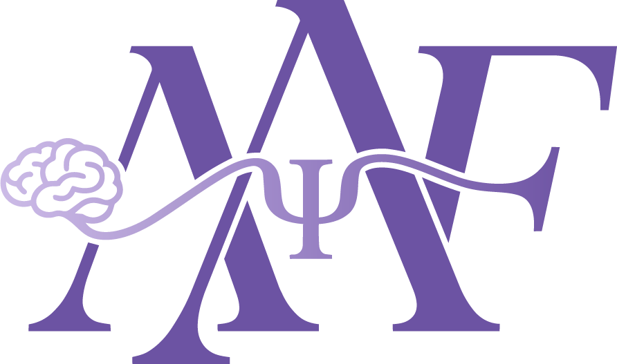

Alzirene Andrade da Fonseca
Psicóloga Clínica · Neuropsicóloga · Psicanalista
Uma marca que nasceu de uma escuta.
Antes de qualquer cor ou letra, ouvimos o que move o trabalho de Alzirene: tirar as pessoas do peso do sofrimento e conduzi-las, com gentileza, até a leveza e o bem-estar.
Conheça a marca →
